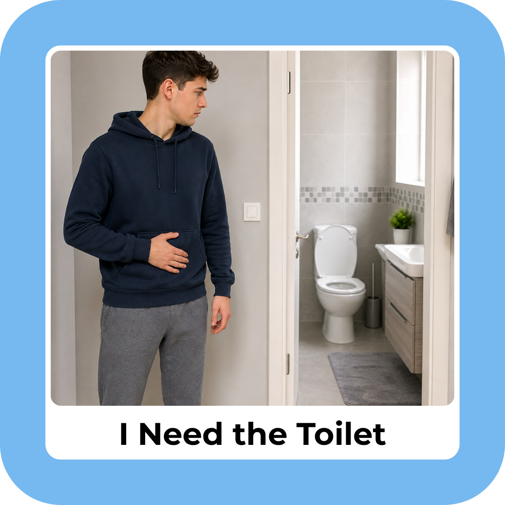

32 cardsToilet routines
& communication
& communication
SELF-CARE & INDEPENDENCE
Toilet Independence Visual Cards
Discreet routine and communication cards for teens and adults. Includes printable sheets and a buyer guide.
US$7.99 Digital pack
View the product